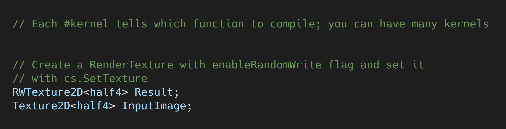
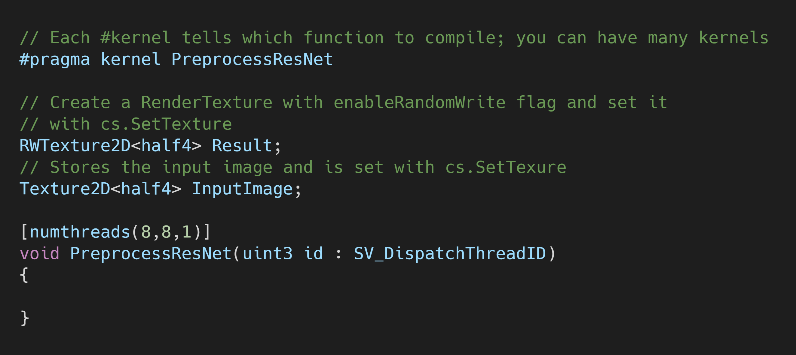
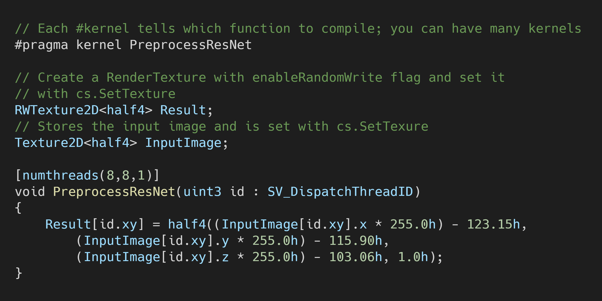
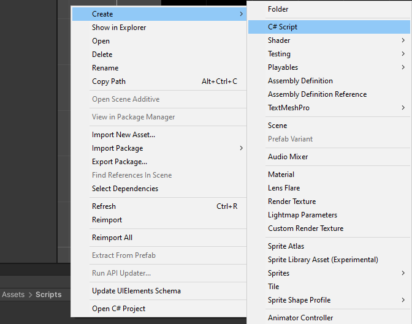
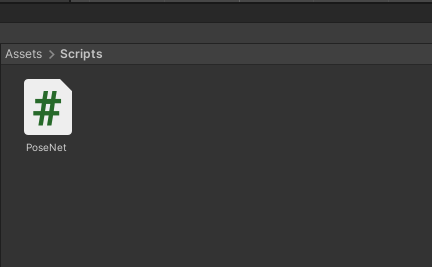
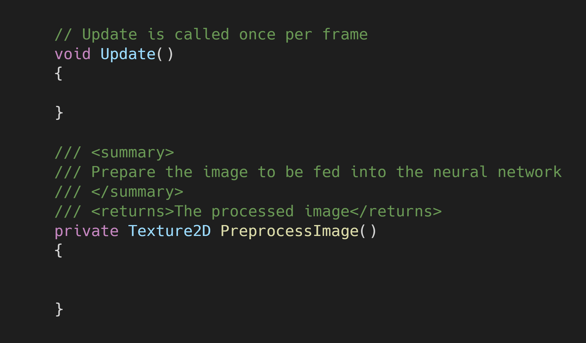
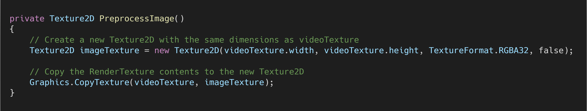
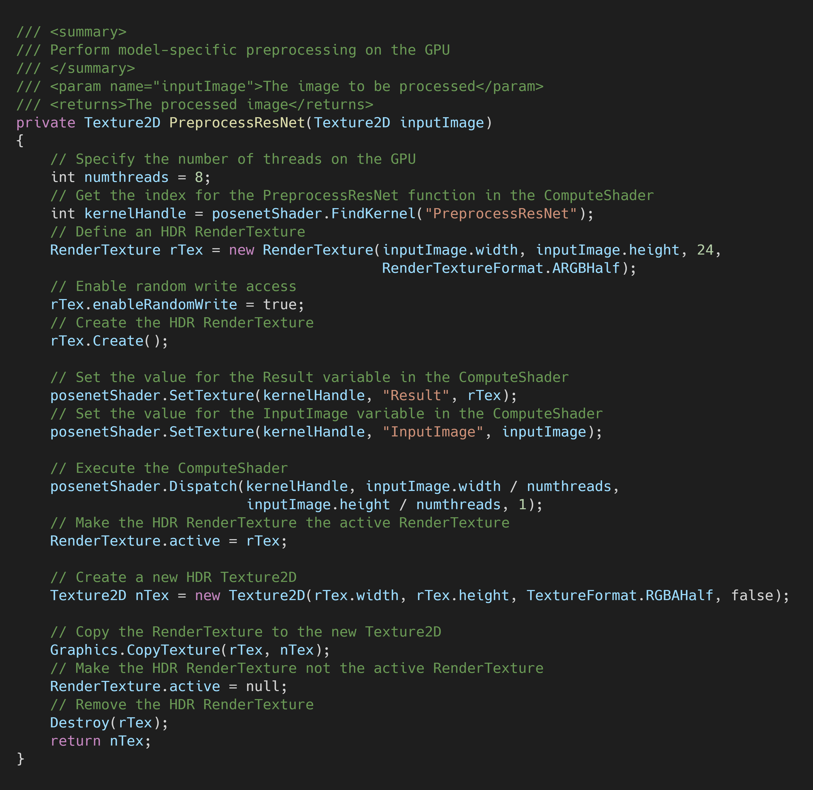
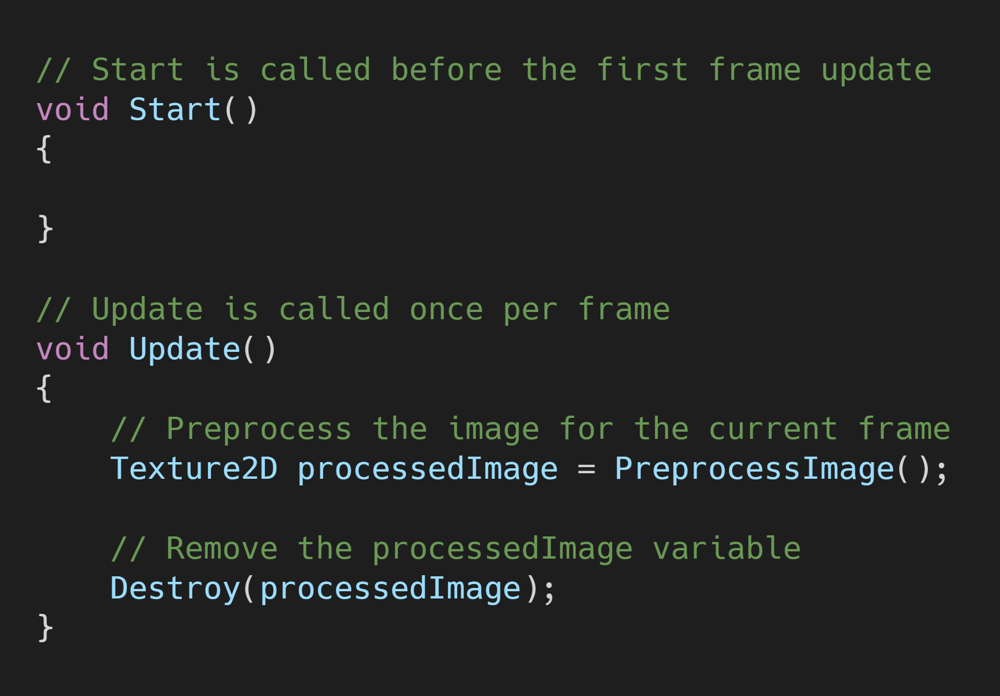
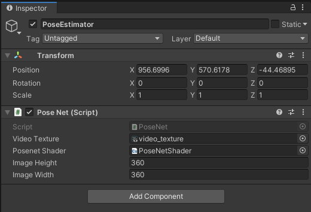

Barracuda PoseNet Tutorial Pt. 2 (Outdated)
Version 2: Part 1
Last Updated: Nov 25, 2020
Previous: Part 1
Introduction
The PoseNet model we’ll be using has a ResNet-50 architecture and was created using TensorFlow. It takes a single RGB image as input. We need to perform some preprocessing operations on the RGB channel values before feeding an image to the model. We’ll first scale the values so that they are in the same range that the model was trained on. We then subtract the mean RGB values for the ImageNet dataset.
Create a Compute Shader
We can perform the preprocessing steps more quickly on the GPU. In Unity, we accomplish this with compute shaders. Compute shaders are pieces of code that can run parallel tasks on the graphics card. This is beneficial since we need to perform the same operations on every pixel in an image. It also frees up the CPU.
Create the Asset File
Create a new folder in the Assets window and name it Shaders. Open the Shaders folder and right-click an empty space. Select Shader in the Create submenu and click Compute Shader. We’ll name it PoseNetShader.

Remove the Default Code
Open the PoseNetShader in your code editor. By default, the ComputeShader will contain the following.

Delete the CSMain function along with the #pragma kernel CSMain. Next, we need to add a Texture2D variable to store the input image. Name it InputImage and give it a data type of <half4>. Use the same data type for the Result variable as well.

Create PreprocessResNet Function
We need to make a new function to apply the ResNet preprocessing. Name the new function PreprocessResNet(). We’ll use the default [numthreads(8,8,1)].

The PreprocessResNet function scales the RGB channel values of every pixel in the InputImage by 255. By default, color values in Unity are in the range of [0,1]. The function then substracts the ImageNet mean specific to the RGB channels. The processed image is returned in the Result variable.
| Channel | ImageNet Mean |
|---|---|
| Red | 123.15 |
| Green | 115.90 |
| Blue | 103.06 |

Now that we’ve created our ComputeShader, we need to execute it using a C# script.
Create the PoseNet Script
We need to make a new C# script to perform inference with the PoseNet model. When finished, this script will load the model, prepare the input, run the model, and process the output. For this post, we’ll implement the preprocessing functionality.
Create the Asset File
Create a new folder in the Assets window and name it Scripts. In the Scripts folder, right-click an empty space and select C# Script in the Create submenu.

Name the script PoseNet.

Open the script in your code editor.
Create videoTexture Variable
Above the start method, create a new public RenderTexture named videoTexture. This is the variable to which we’ll assign the video_texture that we made in part 1.
Create posenetShader Variable
We’ll also create a new public ComputeShader variable and name it posenetShader. We’ll assign the PoseNetShader to this variable in the Unity Editor.

Create PreprocessImage() Method
Next, we need to make a new method to handle the preprocessing steps for the videoTexture. We’ll name this method PreprocessImage and define it below the Update method. The method will return a Texture2D that contains the preprocessed image.

Create a New Texture2D
We don’t want to alter the videoTexture directly, so we’ll make a copy of the current frame. Create a new Texture2D called imageTexture and give it the same dimensions as the videoTexture. We can use the Graphics.CopyTexture() method to copy the data from the RenderTexture directly on the GPU.

Resize the Image
Now that we have our imageTexture, we need to resize it to a more practical resolution. Lowering the resolution does decrease the model’s accuracy. Unfortunately, using a higher resolution can significantly impact inference speed. We’ll examine this trade-off in a later post.
For now, we’ll use a resolution of 360 x 360. Create two new public int variables for the image height and width respectively. This will make it easier to experiment with different resolutions.

We’ll make a new method to handle the resizing process. The method will take in a Texture2D as well as the new height and width. It will return a Texture2D with the new resolution.

The Graphics.CopyTexture() method requires that the source and destination textures be the same size. That means we need to destroy the current imageTexture and make a temporary one with the smaller dimensions.

Note: Resizing the image to 360 x 360 will squish our input image from a 16:9 aspect ratio to a square aspect ratio. We’ll need to account for this when we get to the postprocessing section.
Apply Model-Specific Preprocessing
This is where we’ll make use of the PoseNetShader we made earlier. We’ll create a new method to handle the execution process. Name the new method PreprocessResNet to match the function in the PoseNetShader. They don’t need to have the same name. It’s just personal preference.
For this method, we need to use HDR texture formats for the RenderTexture and Texture2D. This allows us to feed images into the model with color values outside of the standard range of [0,1]. The Barracuda library remaps non-HDR color values to [0,1]. Given that we’re scaling the values by 255, this is undesirable.
You can view the full PreprocessResNet method below.

The PreprocessResNet method returns a Texture2D with an HDR texture format. The switch to HDR texture formats means the tempTex variable is no longer compatible. Fortunately, we can reuse the imageTexture variable that we emptied.
The finished PreprocessImage method looks like this.

Call the Method
We’ll call PreprocessImage() in the Update() method so that it runs every frame.

Create the Pose Estimator
To run the PoseNet script, we need to attach it to a GameObject in the Unity Editor.
Create an Empty GameObject
In the Hierarchy tab, right-click an empty space and select Create Empty from the menu. Name the empty GameObject PoseEstimator.

Attach the PoseNet Script
With the PoseEstimator object selected, drag and drop the PoseNet script into the Inspector tab.

Assign the video_texture
Next, we need to assign the video_texture asset to the Video Texture parameter. With the PoseEstimator object selected, drag and drop the video_texture asset into the Video Texture spot in the Inspector tab.
Assign the PoseNetShader
We also need to drag and drop the PoseNetShader asset into the Posenet Shader spot in the the Inspector tab.

Summary
We’re now ready to feed video frames to our PoseNet model. In part 3, we’ll cover how to install the Barracuda library and perform inference with our model.